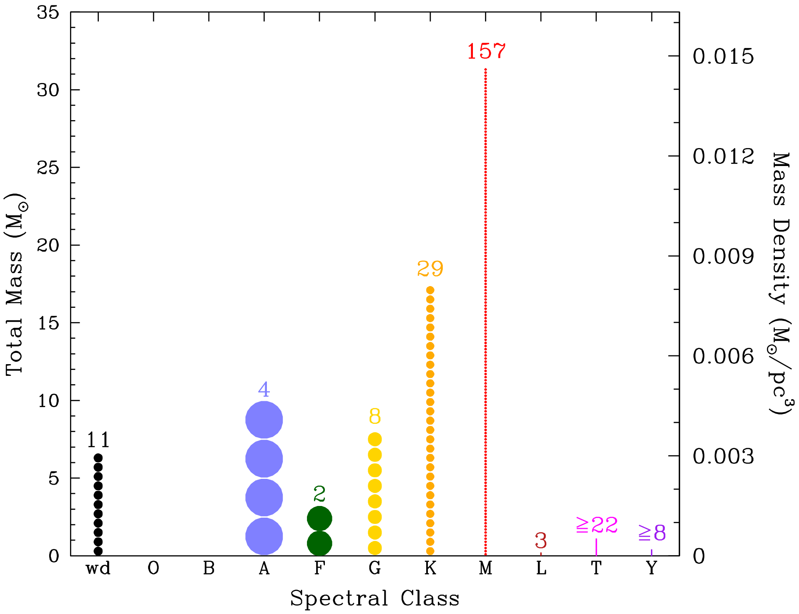

Ссылки
Долететь до Альфа-Центавра... и позвонить жене. Научная фантастика как источник технологий будущего.
Ученые против мифов 13.
Научная фантастика
Ближайшее звездное окружение и межзвездные перелеты
Ближайшее звездное окружение: перепись в окрестности 8 парсек

Экстремофилы, криосон и спячка
Космическая еда
Космическая экономика
Rocket Science

- Термоядерные ракетные двигатели: будущее космонавтики? Статья «Звездные корабли» опубликована в журнале «Популярная механика» (№4, Апрель 2013).
- Ядерные ракетные двигатели и ядерные ракетные электродвигательные установки. Юрий Тараненко, 2018
- Ошибки фантастов или размышления о том, почему остановилась космонавтика. Филипп Терехов, 2014
- NASA's Nuclear Thermal Engine Is a Blast From the Cold War Past. Popular Mechanics, 2018
- Ядерные ракетные двигатели: NERVA,
РД-0410.
- Электростатическая система для быстрого перелета к гелиопаузе, Астрокартинка дня от 16.04.2016;
Heliopause Electrostatic Rapid Transit System (HERTS) (Пресс-релиз НАСА), 2015;
Fast E-sail Uranus entry probe mission.
- Вращающийся детонационный двигатель: Experimental evidence of H2/O2 propellants powered rotating detonation waves
- Реактивное движение по лазерному лучу: Циолковский, ракета и лазер. Аполлонов В.В. («Химия и Жизнь», 2016, №4)
- Водитель марсохода Curiosity отвечает Хабру. Виталий Егоров, 2013
- Космонавтика XXI века. Попытка прогноза развития до 2101 года / под редакцией Б. Е. Чертока. – М.: «РТСофт», 2010.
На главную